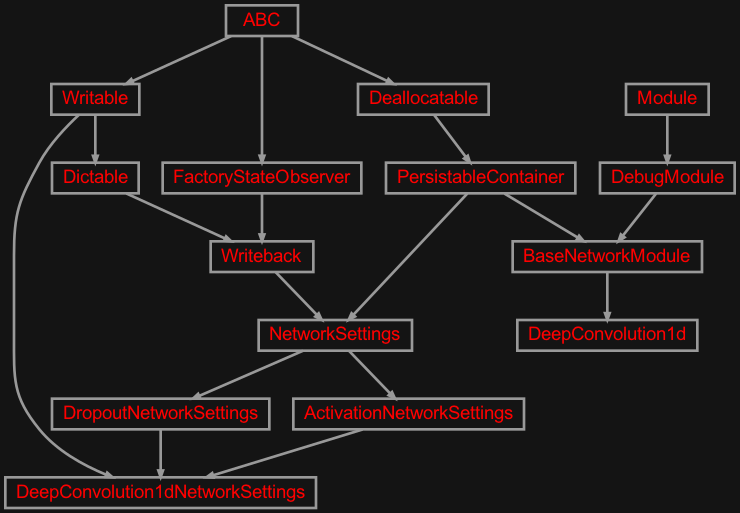
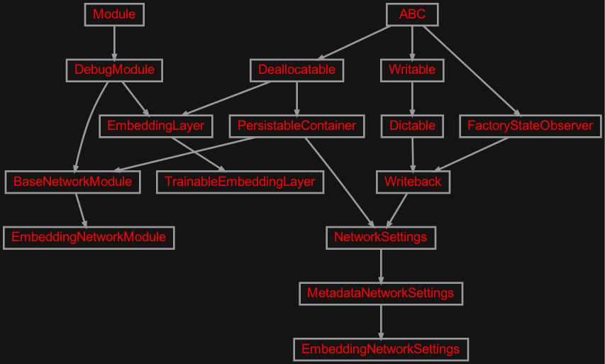
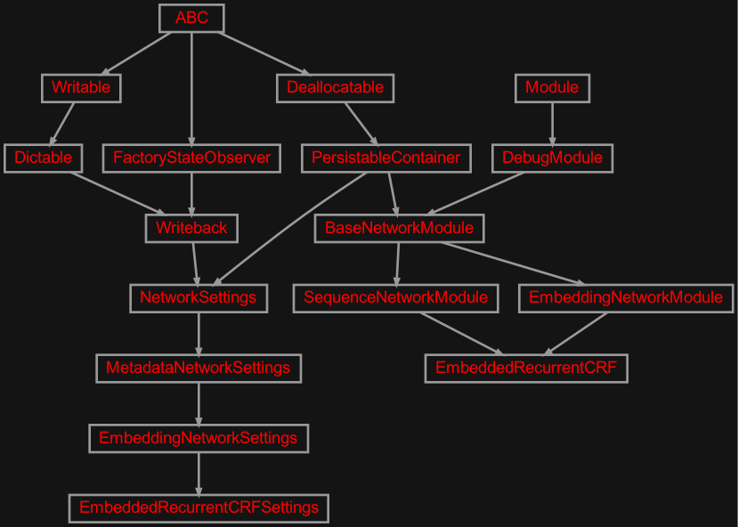
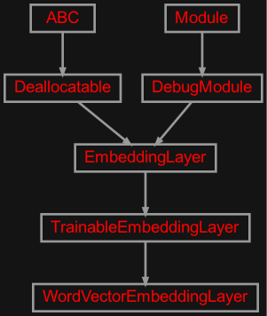

zensols.deepnlp.layer package#
Submodules#
zensols.deepnlp.layer.conv#

Contains convolution functionality useful for NLP tasks.
- class zensols.deepnlp.layer.conv.DeepConvolution1d(net_settings, logger)[source]#
Bases:
BaseNetworkModuleConfigurable repeated series of 1-dimension convolution, pooling, batch norm and activation layers. See
get_layers().- MODULE_NAME: ClassVar[str] = 'conv'#
The module name used in the logging message. This is set in each inherited class.
- __init__(net_settings, logger)[source]#
Initialize the deep convolution layer.
- Implementation note: all layers are stored sequentially using a
torch.nn.Sequentialto get normal weight persistance on torch save/loads.
- Parameters:
net_settings (
DeepConvolution1dNetworkSettings) – the deep convolution layer configurationlogger (
Logger) – the logger to use for the forward process in this layer
- class zensols.deepnlp.layer.conv.DeepConvolution1dNetworkSettings(name, config_factory, dropout, activation, token_length=None, embedding_dimension=None, token_kernel=2, stride=1, n_filters=1, padding=1, pool_token_kernel=2, pool_stride=1, pool_padding=0, repeats=1, batch_norm_d=None)[source]#
Bases:
ActivationNetworkSettings,DropoutNetworkSettings,WritableConfigurable repeated series of 1-dimension convolution, pooling, batch norm and activation layers. This layer is specifically designed for natural language processing task, which is why this configuration includes parameters for token counts.
- Each layer repeat consists of::
convolution
max pool
batch (optional)
activation
This class is used directly after embedding (and in conjuction with) a layer class that extends
EmbeddingNetworkModule. The lifecycle of this class starts with being instantiated (usually configured using aImportConfigFactory), then cloned withclone()during the initialization on the layer from which it’s used.- Parameters:
token_length (
int) – the number of tokens processed through the layer (used as the width kernel parameterW)embedding_dimension (
int) – the dimension of the embedding (word vector) layer (height dimensionHand the kernel parameterF)token_kernel (
int) – the size of the kernel in number of tokens (width dimension of kernel parameterF)n_filters (
int) – number of filters to use, aka filter depth/volume (K)stride (
int) – the stride, which is the number of cells to skip for each convolution (S)padding (
int) – the zero’d number of cells on the ends of tokens X embedding neurons (P)pool_token_kernel (
int) – liketoken_lengthbut in the pooling layerpool_stride (
int) – likestridebut in the pooling layerpool_padding (
int) – likepaddingbut in the pooling layerrepeats (
int) – number of times the convolution, max pool, batch, activation layers are repeatedbatch_norm_d (
int) – the dimension of the batch norm (should be1) orNoneto disable
- See:
- __init__(name, config_factory, dropout, activation, token_length=None, embedding_dimension=None, token_kernel=2, stride=1, n_filters=1, padding=1, pool_token_kernel=2, pool_stride=1, pool_padding=0, repeats=1, batch_norm_d=None)#
- clone(module, **kwargs)[source]#
Clone this network settings configuration with a different embedding settings.
- Parameters:
module (
EmbeddingNetworkModule) – the embedding settings to use in the clonekwargs – arguments as attributes on the clone
- get_module_class_name()[source]#
Returns the fully qualified class name of the module to create by
ModelManager. This module takes as the first parameter an instance of this class.Important: This method is not used for nested modules. You must declare specific class names in the configuration for those nested class naems.
- Return type:
- property layer_factory: ConvolutionLayerFactory#
Return the factory used to create convolution layers.
- property pool_factory: MaxPool1dFactory#
Return the factory used to create max 1D pool layers.
- write(depth=0, writer=<_io.TextIOWrapper name='<stdout>' mode='w' encoding='utf-8'>)[source]#
Write this instance as either a
Writableor as aDictable. If class attribute_DICTABLE_WRITABLE_DESCENDANTSis set asTrue, then use thewrite()method on children instead of writing the generated dictionary. Otherwise, write this instance by first creating adictrecursively usingasdict(), then formatting the output.If the attribute
_DICTABLE_WRITE_EXCLUDESis set, those attributes are removed from what is written in thewrite()method.Note that this attribute will need to be set in all descendants in the instance hierarchy since writing the object instance graph is done recursively.
- Parameters:
depth (
int) – the starting indentation depthwriter (
TextIOBase) – the writer to dump the content of this writable
zensols.deepnlp.layer.embed#

An embedding layer module useful for models that use embeddings as input.
- class zensols.deepnlp.layer.embed.EmbeddingLayer(feature_vectorizer_manager, embedding_dim, sub_logger=None, trainable=False)[source]#
Bases:
DebugModule,DeallocatableA class used as an input layer to provide word embeddings to a deep neural network.
Important: you must always check for attributes in
deallocate()since it might be called more than once (i.e. from directly deallocating and then from the factory).Implementation note: No datacasses are usable since pytorch is picky about initialization order.
- __init__(feature_vectorizer_manager, embedding_dim, sub_logger=None, trainable=False)[source]#
Initialize.
- Parameters:
feature_vectorizer_manager (
FeatureDocumentVectorizerManager) – the feature vectorizer manager that manages this instanceembedding_dim (
int) – the vector dimension of the embeddingtrainable (
bool) –Trueif the embedding layer is to be trained
- property token_length#
- property torch_config#
- class zensols.deepnlp.layer.embed.EmbeddingNetworkModule(net_settings, module_logger=None, filter_attrib_fn=None)[source]#
Bases:
BaseNetworkModuleAn module that uses an embedding as the input layer. This class uses an instance of
EmbeddingLayerprovided by the network settings configuration for resolving the embedding during the forward phase.The following attributes are created and/or set during initialization:
embeddingtheEmbeddingLayerinstance used get the input embedding tensorsembedding_attribute_namesthe name of the word embedding vectorized feature attribute names (usually one, but possible to have more)embedding_output_sizethe outpu size of the embedding layer, note this includes any features layered/concated given in all token level vectorizer’s configurationjoin_sizeif a join layer is to be used, this has the size of the part of the join layer that will have the document level featurestoken_attribsthe token level feature names (seeforward_token_features())doc_attribsthe doc level feature names (seeforward_document_features())
The initializer adds additional attributes conditional on the
EmbeddingNetworkSettingsinstance’sbatch_metadataproperty (typeBatchMetadata). For each meta data field’s vectorizer that extends classFeatureDocumentVectorizerthe following is set on this instance based on the value offeature_type(of typeTextFeatureType):Fields can be filtered by passing a filter function to the initializer. See
__init__()for more information.- MODULE_NAME: ClassVar[str] = 'embed'#
The module name used in the logging message. This is set in each inherited class.
- __init__(net_settings, module_logger=None, filter_attrib_fn=None)[source]#
Initialize the embedding layer.
- Parameters:
net_settings (
EmbeddingNetworkSettings) – the embedding layer configurationlogger – the logger to use for the forward process in this layer
filter_attrib_fn (
Callable[[BatchFieldMetadata],bool]) – if provided, called with aBatchFieldMetadatafor each field returningTrueif the batch field should be retained and used in the embedding layer (see class docs); ifNoneall fields are considered
- property embedding_dimension: int#
Return the dimension of the embeddings, which doesn’t include any additional token or document features potentially added.
- forward_document_features(batch, x=None, include_fn=None)[source]#
Concatenate any document features given by the vectorizer configuration.
- Return type:
- forward_embedding_features(batch)[source]#
Use the embedding layer return the word embedding tensors.
- Return type:
- forward_token_features(batch, x=None)[source]#
Concatenate any token features given by the vectorizer configuration.
- get_embedding_tensors(batch)[source]#
Get the embedding tensors (or indexes depending on how it was vectorize) from a batch.
- class zensols.deepnlp.layer.embed.EmbeddingNetworkSettings(name, config_factory, batch_stash, embedding_layer)[source]#
Bases:
MetadataNetworkSettingsA utility container settings class for models that use an embedding input layer that inherit from
EmbeddingNetworkModule.- __init__(name, config_factory, batch_stash, embedding_layer)#
-
embedding_layer:
EmbeddingLayer# The word embedding layer used to vectorize.
- get_module_class_name()[source]#
Returns the fully qualified class name of the module to create by
ModelManager. This module takes as the first parameter an instance of this class.Important: This method is not used for nested modules. You must declare specific class names in the configuration for those nested class naems.
- Return type:
- class zensols.deepnlp.layer.embed.TrainableEmbeddingLayer(feature_vectorizer_manager, embedding_dim, sub_logger=None, trainable=False)[source]#
Bases:
EmbeddingLayerA non-frozen embedding layer that has grad on parameters.
- state_dict(*args, destination=None, prefix='', keep_vars=False)[source]#
Returns a dictionary containing references to the whole state of the module.
Both parameters and persistent buffers (e.g. running averages) are included. Keys are corresponding parameter and buffer names. Parameters and buffers set to
Noneare not included.Note
The returned object is a shallow copy. It contains references to the module’s parameters and buffers.
Warning
Currently
state_dict()also accepts positional arguments fordestination,prefixandkeep_varsin order. However, this is being deprecated and keyword arguments will be enforced in future releases.Warning
Please avoid the use of argument
destinationas it is not designed for end-users.- Parameters:
destination (dict, optional) – If provided, the state of module will be updated into the dict and the same object is returned. Otherwise, an
OrderedDictwill be created and returned. Default:None.prefix (str, optional) – a prefix added to parameter and buffer names to compose the keys in state_dict. Default:
''.keep_vars (bool, optional) – by default the
Tensors returned in the state dict are detached from autograd. If it’s set toTrue, detaching will not be performed. Default:False.
- Returns:
a dictionary containing a whole state of the module
- Return type:
Example:
>>> # xdoctest: +SKIP("undefined vars") >>> module.state_dict().keys() ['bias', 'weight']
zensols.deepnlp.layer.embrecurcrf#

Embedding input layer classes.
- class zensols.deepnlp.layer.embrecurcrf.EmbeddedRecurrentCRF(net_settings, sub_logger=None)[source]#
Bases:
EmbeddingNetworkModule,SequenceNetworkModuleA recurrent neural network composed of an embedding input, an recurrent network, and a linear conditional random field output layer. When configured with an LSTM, this becomes a (Bi)LSTM-CRF. More specifically, this network has the following:
Input embeddings mapped from tokens.
Recurrent network (i.e. LSTM).
Fully connected feed forward deep linear layer(s) as the decoder.
Linear chain conditional random field (CRF) layer.
Output the labels.
- MODULE_NAME: ClassVar[str] = 'emb-recur-crf'#
The module name used in the logging message. This is set in each inherited class.
- __init__(net_settings, sub_logger=None)[source]#
Initialize the embedding layer.
- Parameters:
net_settings (
EmbeddedRecurrentCRFSettings) – the embedding layer configurationlogger – the logger to use for the forward process in this layer
filter_attrib_fn – if provided, called with a
BatchFieldMetadatafor each field returningTrueif the batch field should be retained and used in the embedding layer (see class docs); ifNoneall fields are considered
- class zensols.deepnlp.layer.embrecurcrf.EmbeddedRecurrentCRFSettings(name, config_factory, batch_stash, embedding_layer, recurrent_crf_settings, mask_attribute, tensor_predictions=False, use_crf=True)[source]#
Bases:
EmbeddingNetworkSettingsA utility container settings class for convulsion network models.
- __init__(name, config_factory, batch_stash, embedding_layer, recurrent_crf_settings, mask_attribute, tensor_predictions=False, use_crf=True)#
- get_module_class_name()[source]#
Returns the fully qualified class name of the module to create by
ModelManager. This module takes as the first parameter an instance of this class.Important: This method is not used for nested modules. You must declare specific class names in the configuration for those nested class naems.
- Return type:
-
recurrent_crf_settings:
RecurrentCRFNetworkSettings# The RNN settings (configure this with an LSTM for (Bi)LSTM CRFs).
-
tensor_predictions:
bool= False# Whether or not to return predictions as tensors. There are currently no identified use cases to do this as setting this to
Truewill inflate performance metrics. This is because the batch iterator will create a tensor with the entire batch adding a lot of default padded value that will be counted as results.
zensols.deepnlp.layer.wordvec#

Glue betweeen WordEmbedModel and
:clas:`torch.nn.Embedding`.
- class zensols.deepnlp.layer.wordvec.WordVectorEmbeddingLayer(embed_model, *args, **kwargs)[source]#
Bases:
TrainableEmbeddingLayerAn input embedding layer. This uses an instance of
WordEmbedModelto compose the word embeddings from indexes. Each index is that of word vector, which is stacked to create the embedding. This happens in the PyTorch framework, and is fast.This class overrides PyTorch methods that disable persistance of the embedding weights when configured to be frozen (not trainable). Otherwise, the entire embedding model is saved every time the model is saved for each epoch, which is both unecessary, but costs in terms of time and memory.
- __init__(embed_model, *args, **kwargs)[source]#
Initialize
- Parameters:
embed_model (
WordEmbedModel) – contains the word embedding model, such asglove, andword2vec
- forward(x)[source]#
Defines the computation performed at every call.
Should be overridden by all subclasses. :rtype:
TensorNote
Although the recipe for forward pass needs to be defined within this function, one should call the
Moduleinstance afterwards instead of this since the former takes care of running the registered hooks while the latter silently ignores them.
Module contents#
Layers specific to natural language processing.